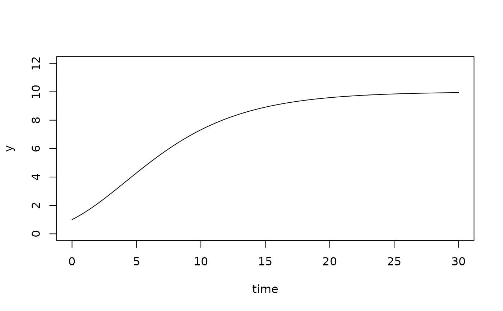

Gompertz growth model written as analytical solution of the differential equation system.
Details
The equation used here is:
$$y = y0*(K/y0)^(exp(-exp((exp(1)*mumax*(lambda - time))/log(K/y0)+1)))$$
Functions grow_gompert2 and grow_gompertz3 describe
sigmoidal growth with an exponentially decreasing intrinsic growth rate with
or without an additional lag parameter. The formula follows the
reparametrization of Zwietering et al (1990), with parameters that have
a biological meaning.
References
Tsoularis, A. (2001) Analysis of Logistic Growth Models. Res. Lett. Inf. Math. Sci, (2001) 2, 23-46.
Zwietering, M. H., Jongenburger, I., Rombouts, F. M., and Van't Riet, K. (1990). Modeling of the bacterial growth curve. Appl. Environ. Microbiol., 56(6), 1875-1881.
See also
Other growth models:
grow_baranyi(),
grow_exponential(),
grow_gompertz(),
grow_huang(),
grow_logistic(),
grow_richards(),
growthmodel,
ode_genlogistic(),
ode_twostep()
Examples
time <- seq(0, 30, length=200)
y <- grow_gompertz(time, c(y0=1, mumax=.2, K=10))[,"y"]
plot(time, y, type="l", ylim=c(0, 12))
